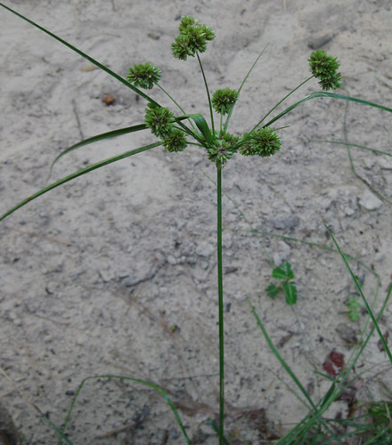
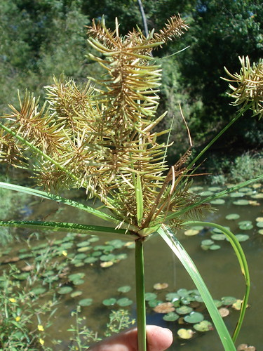
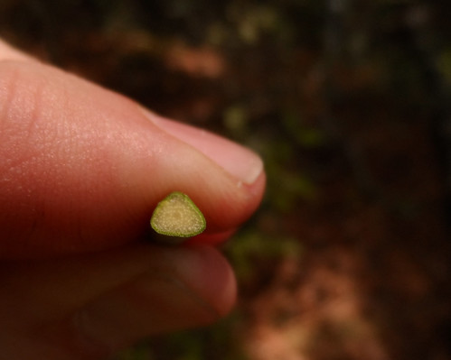
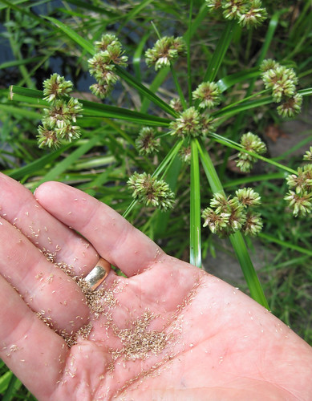
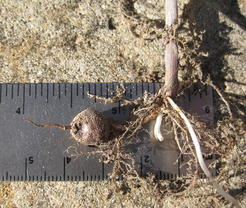
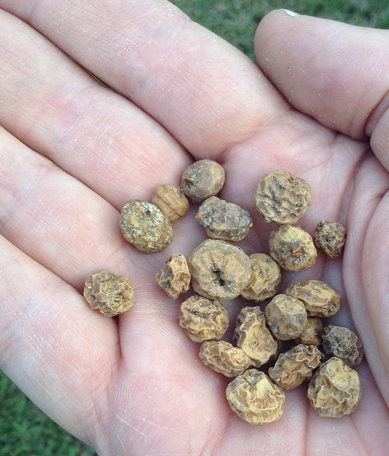

Scientific name: Cyperaceae spp.
Abundance: plentiful
What: tubers, seeds
How: tubers and seeds can be eaten raw or cooked
Where: fields, lawns, marshes, woods, water
When: summer
Nutritional Value: seeds contain protein and carbohydrates, tubers contain starch
Dangers: Thoroughly wash any plants collected from water to remove harmful bacteria.
One type of nutsedge.

Another type of nutsedge.

"Sedges Have Edges" meaning all nutsedges have triangular stalks.

Nutsedge seeds shaken from head of plant.

Nutsedge "nut" attached to root.

More nutsedge nuts.

Sticking up like small palm trees, thick clusters of nutsedges spot the landscape...usually infuriating the landowner. They can range in size from just a few inches tall and as thin as a pencil lead to multiple feet high with stalks thicker than a pencil. All varieties have several things in common: sedges have edges meaning the stalks are always triangular with some being rounded and others have very sharp corners, the stalks are bare of leaves until the very top which makes me think they look like palm trees. They are almost impossible to eradicate from an area. Their habitats range from cracks in parking lots to yards and fields to into shallow water. Once they mature seed clusters will form on short stalks among the leaves at the top of the sedge in a bunch of different shapes.
Nutsedges were originals cultivated in ancient times as both a food and a source of fiber for paper (papyrus). Along with seeds at the top of the plant there are deposits of starch in pea-sized tubers along the roots. These must be carefully dug out of the ground as the "nuts" will tear away from the roots and remain in the ground if the nutsedge is pulled from the soil. Loose, sandy soil will have a large crop of these root nuts while heavy clay soils will have very few. They can be eaten raw or toasted.
The best "nuts" come from the Chufa Nutsedge (Cyperus esculentus var. sativus) which came originally from Africa but quickly spread through North America. Part of this spread is due to deer and turkeys loving these underground nuts and so one can buy bags of Chufa at larger hunting supply stores. Do not eat the purchased nuts as they may have been treated with a surface fungicide. These nuts are meant to be planted in late fall or early spring to grow a crop for the animals to eat starting in late summer.
Chufa nuts are also used to make the drink "Horchata de Chufa" by soaking the ground nuts in water the adding sugar and cinnamon. This is similar to almond milk.